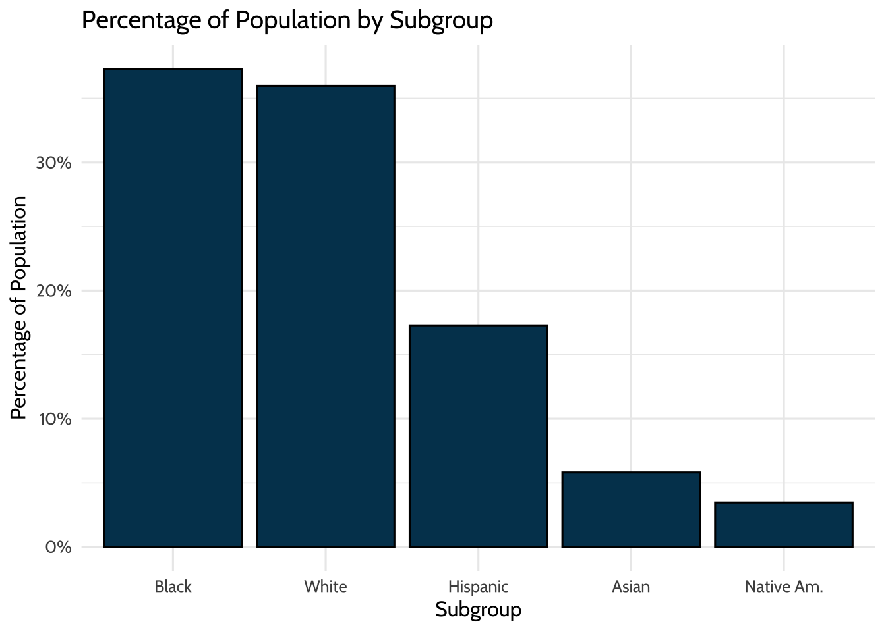
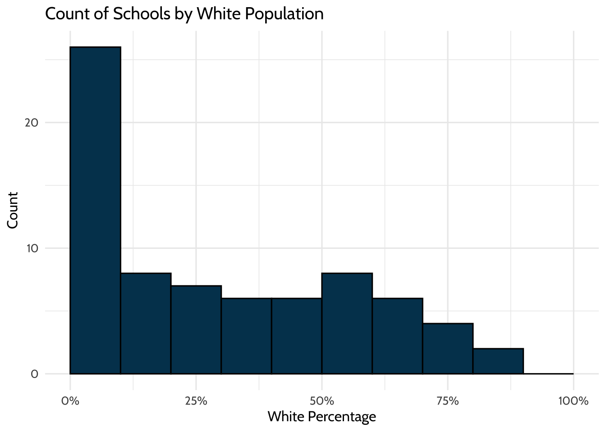
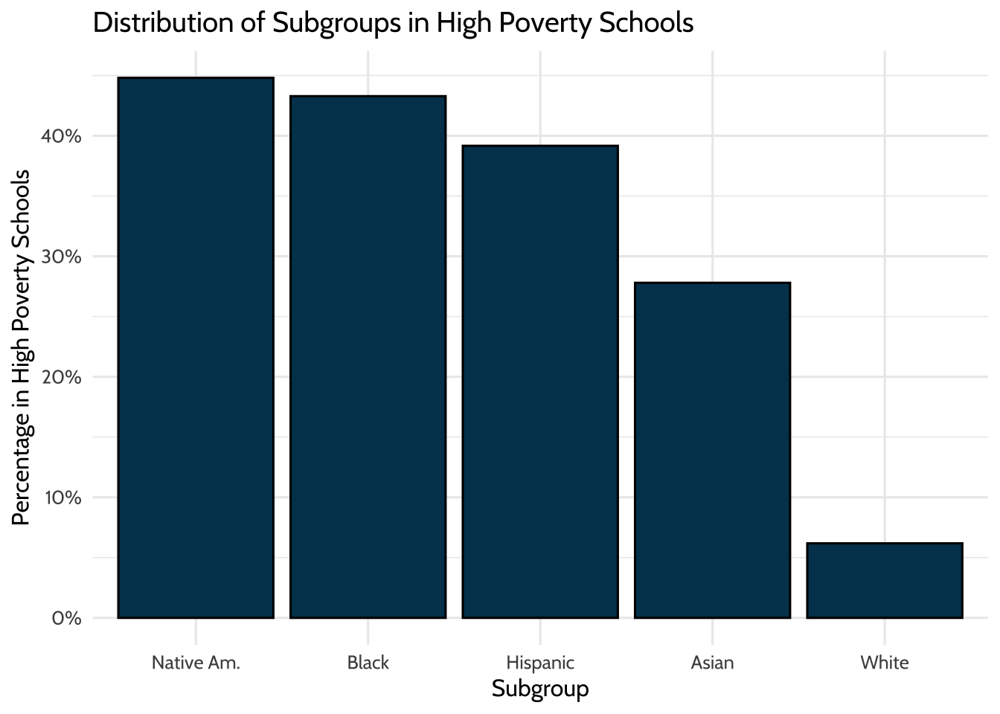
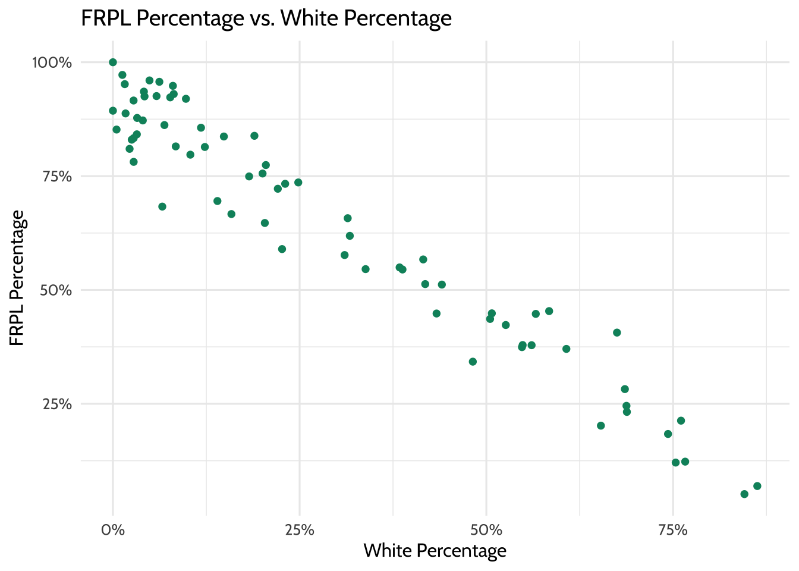

9 Walkthrough 3: Using school-level aggregate data to illuminate educational inequities
Abstract
This chapter explores cleaning, tidying, joining, and visualizing publicly available, aggregate data. Data scientists in education frequently work with public aggregate data when student-level data is not available. By working with these data, they can discover broader trends and underlying patterns. If aggregate data is disaggregated by subgroups or subpopulations, data scientists can reveal areas of inequity for marginalized populations.
This chapter uses a freely available school district dataset to examine the distribution of students in the district by race and socioeconomic status. Subgroup analysis can reveal the state of equity in a system and inform student improvement. Data science techniques in this chapter include reading tables from an online PDF into a machine-readable format, preparing data for analysis, transforming it into a tidy format, visualizing it, and analyzing distributions and relationships.
9.2 Functions introduced
tabulapdf::extract_tables()readRDS()purrr::mappurrr::list_rbind()purrr::set_names()dplyr::slice()trimws()stringr::str_replace()janitor::adorn_totals()
9.3 Vocabulary
- aggregate data
- descriptive analysis
- disaggregated data
- data frame
- Free and Reduced-Price Lunch (FRPL)
- histogram
- lists
- subgroup
- trim
- weighted average
9.4 Chapter overview
Data scientists in education don’t always have access to student-level data, so knowing how to analyze aggregate datasets is very valuable. This chapter explores aggregate data and how to access, clean, and explore it. It is a “companion” to Chapter 10, which also explores aggregate data but does so with an emphasis on “longitudinal analyses”—analyses that involve data at more than one point in time.
9.4.1 Background
A common situation encountered when searching for education data, particularly by analysts who are not directly working with schools or districts, is the prevalence of publicly available aggregate data. Aggregate data is information that has the following characteristics:
collected from multiple sources and/or on multiple measures, variables, or individuals and
compiled into data summaries or summary reports, typically for the purposes of public reporting or statistical analysis (Great Schools, n.d.)
Examples of publicly available aggregate data include school-level graduation rates, state test proficiency scores by grade and subject, or mean survey responses. In this walkthrough, you’ll explore the role of aggregate data with a focus on educational equity.
Aggregate data is essential both for accountability and for providing useful information about schools and districts. For example, district administrators might aggregate student-level enrollment reports over time. They can use this information to see how many students enroll in each school, in the district overall, and at various grade levels. Depending on the state, the district administrator might submit these aggregate data to their state education agency (SEA) for reporting purposes. These datasets might be posted on the state’s Department of Education website for anyone to download and use.
Federal and international education datasets provide additional information. In the US, some federal datasets aim to consolidate important metrics from all states. These consolidated reports can be useful because each state has its own repository of data. Going through each state’s website to download a particular metric is a significant effort. However, the federal datasets often have more stringent data requirements than the states, so the datasets may be less usable.
Data scientists in education can analyze these reports and datasets to answer questions related to their field of interest, but doing so is not always straightforward. Publicly available aggregate datasets are large and often suppressed to protect privacy. Because of their coarseness, they can be difficult to interpret and use. Sometimes, agencies delay release of the dataset by multiple years.
Generally, aggregate data is used to surface broader trends and patterns in education instead of diagnosing underlying issues or making causal statements. Data scientists must consider the limitations of aggregate data before analyzing it.
Despite these limitations, the wide availability of aggregated data has its benefits. Analysis of aggregate data helps educators identify patterns that are harder to see in individual-level data. Data scientists in education can use this new insight to create research questions, craft hypotheses, and make recommendations on how to improve education systems.
This chapter and the following one provide two examples of cleaning aggregate data and using these datasets to compare student experiences. In this chapter, you’ll focus on educational equity by identifying and comparing patterns in student demographic groups. In the next chapter, you’ll compare student counts over time in different states.
9.4.1.1 What is the difference between aggregate and student-level data?
Let’s explore the differences between aggregate and student-level data. Publicly available data—like the data you’ll use in this walkthrough—summarizes student-level data. This means that student-level data is totaled to protect students’ identities before being made publicly available. We can use R to demonstrate this concept.
Here are rows in an example student-level dataset:
library(tidyverse)
# Create student-level data
tibble(
student = letters[1:10],
school = rep(letters[11:15], 2),
test_score = sample(0:100, 10, replace = TRUE)
)## # A tibble: 10 × 3
## student school test_score
## <chr> <chr> <int>
## 1 a k 90
## 2 b l 29
## 3 c m 92
## 4 d n 83
## 5 e o 55
## 6 f k 59
## 7 g l 89
## 8 h m 17
## 9 i n 96
## 10 j o 72Run the next code chunk, and you’ll see that aggregate data totals up a variable—the variable test_score in this case—to “roll up” the student-level information. Each row of the resulting dataset represents a group. The group in this example is school, which you’ll tell R to use by putting it in group_by(). Then, you’ll calculate the average score by school with summarize() and mean():
tibble(
student = letters[1:10],
school = rep(letters[11:15], 2),
test_score = sample(0:100, 10, replace = TRUE)
) %>%
# Aggregate by school
group_by(school) %>%
# Calculate average score by school
summarize(mean_score = mean(test_score))## # A tibble: 5 × 2
## school mean_score
## <chr> <dbl>
## 1 k 51
## 2 l 67
## 3 m 50
## 4 n 39.5
## 5 o 27.5Notice that this dataset no longer identifies individual students.
9.4.1.2 Disaggregating aggregated data
In this walkthrough, you’ll encounter the term “disaggregated.” In the context of the walkthrough, this means disaggregating to a smaller group but not to the individual level.
Aggregated data can tell you many things, but to better examine groups that share similar characteristics, you must have data disaggregated by those groups. This data is still aggregated at the row level but provides information on smaller components than the grand total (National Forum on Education Statistics, 2016). Common disaggregations for students include gender, race and ethnicity, socioeconomic status, English learner designation, and whether they are served under the Individuals with Disabilities Education Act (IDEA) (The Glossary of Education Reform, 2015).
9.4.1.3 Disaggregating data and equity
Disaggregated data is essential for understanding equity in educational resources and outcomes. Without disaggregating data by student characteristics, educators are unable to understand how different groups of students are doing and what support they need. With disaggregated data, educators can identify what solutions are required in order to solve disparities in opportunity, resources, and treatment.
9.5 Methods
In this chapter, you’ll practice analyzing data from a single district to help education data practitioners describe the district’s needs and opportunities. You’ll use descriptive analysis on an aggregate dataset to find out whether there is a phenomenon present, what it is, and what leaders can address through resources, reforms, or interventions (Loeb et al., 2017). Descriptive analysis is different from causal analysis, which aims to assess the root cause of a phenomenon or the effects of an intervention.
First, you’ll learn how to import PDFs into R, clean and wrangle data, and visualize it to gain insights about the district.
9.6 Data sources
There are many publicly available aggregate datasets related to education. On the international level, perhaps the most well-known is PISA:
- Programme for International Student Assessment (PISA) (https://www.oecd.org/pisa/), which measures 15-year-old school pupils’ academic performance in mathematics, science, and reading.
At the U.S. federal level, well-known examples include:
Civil Rights Data Collection (CRDC) (https://www2.ed.gov/about/offices/list/ocr/data.html), which reports variables on educational programs and services disaggregated by race and ethnicity, sex, limited English proficiency, and disability. This data is at the school level.
Common Core of Data (CCD) (https://nces.ed.gov/ccd/), which is the U.S. Department of Education’s primary database on public elementary and secondary education.
EdFacts (https://www2.ed.gov/about/inits/ed/edfacts/data-files/index.html), which includes state assessments and adjusted cohort graduation rates. This data is at the school and district level.
Integrated Postsecondary Education Data System (IPEDS) (https://nces.ed.gov/ipeds/), which is the U.S. Department of Education’s primary database on postsecondary education.
National Assessment for Educational Progress (NAEP) Data (https://nces.ed.gov/nationsreportcard/researchcenter/datatools.aspx), which is an assessment of educational progress in the United States. Often called the “nation’s report card”, the NAEP reading and mathematics assessments are administered to a representative sample of fourth- and eighth-grade students in each state every two years.
At the U.S. state and district levels, two examples include:
California Department of Education (https://www.cde.ca.gov/ds/), which is the state’s Department of Education website. It includes both downloadable CSV files and “Data Quest”, which lets you query their data online.
Minneapolis Public Schools (https://mpschools.org/about-mps/data-dashboard), which is a school district website that displays data at the school level.
9.6.1 Selecting data
For this walkthrough, you’ll examine data from a school district. In the next, you’ll zoom out and examine data across states in the United States.
When we published the first edition of this book in 2020, the school district provided comprehensive student demographic data in PDF format. They reported both the percentage and exact number of students in each subgroup. This detailed information allowed a thorough examination of individual school demographics and offered an excellent opportunity to explore systemic inequities.
The district has since changed its reporting process to a school-level dashboard. The PDFs we used in the first edition are no longer available on the district’s website. This change in availability and access is a common occurrence in education. We cannot assume that data will remain available in the same format or location, or remain available at all.
Adapting to changes in data availability is crucial for a data scientist in education. You can implement data governance measures in your organization, save backups in an organized manner in accordance with privacy and security policies, and create a centralized repository for data-related resources. To learn more, we recommend Data Management in Large-Scale Education Research by Crystal Lewis (Lewis, 2024).
To ensure consistent access to the PDFs for this chapter, we saved copies in our GitHub repository (https://github.com/data-edu/data-science-in-education/tree/master/data/agg_data). You can verify their original locations on the district website with the Wayback Machine:
- Race/ethnicity data (https://web.archive.org/web/20201112024712/https://studentaccounting.mpls.k12.mn.us/uploads/mps_fall2018_racial_ethnic_by_school_by_grade.pdf)
- FRPL data (https://web.archive.org/web/20220307174824/https://studentaccounting.mpls.k12.mn.us/uploads/fall_2018_meal_eligiblity_official.pdf)
9.7 Load packages
As in past chapters, begin your script by calling the necessary packages. If you have not installed these packages yet, see the “Packages” section of the “Foundational Skills” chapter.
rOpenSci created the {tabulapdf} (Sepulveda, 2024) package. It provides R bindings to the Tabula PDF Table Extractor Library, which can be used to computationally extract tables from PDF documents. It is not available on CRAN, so install it by running the code below:
install.packages(
"tabulapdf",
repos = c(
"https://ropensci.r-universe.dev",
"https://cloud.r-project.org"
)
){rJava} (Urbanek, 2026) is a required package to load {tabulapdf}. If you’re unable to install {rJava} or would like to go straight to the data processing, use Option 2 or Option 3 below to import the data.
9.8 Import data
Throughout this book’s walkthroughs, you’ll have a chance to import files in different ways. You’ll import different file types. You’ll also learn how to import files using convenient functions like here::here() or using file paths. You’ll now proceed to this walkthrough’s specific import procedure.
You have three options for extracting the data from the PDFs. Pick one option, run the code, and then follow the data workflow to clean and process the data.
Option 1: Use {tabulapdf}, which pulls the PDF tables into lists using extract_tables(). The PDFs are available in the book’s GitHub repository (https://github.com/data-edu/data-science-in-education/tree/master/data/agg_data).
Option 2: Get the imported but unprocessed data from the book’s GitHub repository (https://github.com/data-edu/data-science-in-education/tree/master/data/agg_data). They are available in the files race_pdf.Rds and frpl_pdf.Rds. To set up the folders in your working directory as they are in this book, first, create a folder called "data". Then, inside that folder, create a second folder called "agg_data" and place the race_pdf.Rds and frpl_pdf.Rds files in the "agg_data" folder. Then, load the data using here(). Alternatively, if you are using a different working directory, change the file path inside of here() to match where you store your data in your working directory.
Option 3: Get the imported but unprocessed data from the {dataedu} package.
Begin importing the data with the Race/Ethnicity tables. Import the PDF information using one of the three options:
# Option 1: Get data using {tabulapdf}
race_pdf <-
extract_tables(
"https://github.com/data-edu/data-science-in-education/blob/main/data/agg_data/mps_fall2018_racial_ethnic_by_school_by_grade.pdf?raw=true"
)
# Option 2: Get data from the book repository
# The code below assumes you have set up folders data and agg_data within your working directory
race_pdf <-
readRDS(here("data", "agg_data", "race_pdf.Rds"))
# Option 3: Get data using {dataedu}
race_pdf <-
dataedu::race_pdfNext, convert what you’ve imported into a data frame. The object race_pdf is a list. Before analyzing the data, you need to transform the list into a data frame by following these steps:
- Turn
race_pdfinto a tibble by usingmap(as_tibble())from the {purrr} package. - Use the
list_rbind()function to turn these tibbles into a single data frame. - Use the
slice()function to remove unnecessary rows. - Create readable column names using
set_names().
race_df <-
race_pdf %>%
# Turn each page into a tibble
map( ~ as_tibble(.x, .name_repair = "unique")) %>%
# Make data frame
list_rbind() %>%
# Remove unnecessary rows
slice(-1:-2) %>%
# Use descriptive column names
set_names(
c(
"school_group",
"school_name",
"grade",
"na_num",
# Native American number of students
"na_pct",
# Native American percentage of students
"aa_num",
# African American number of students
"aa_pct",
# African American percentage
"as_num",
# Asian number of students
"as_pct",
# Asian percentage
"hi_num",
# Hispanic number of students
"hi_pct",
# Hispanic percentage
"wh_num",
# White number of students
"wh_pct",
# White percentage
"pi_pct",
# Pacific Islander percentage
"blank_col",
# Total number of students (from the Race PDF)
"tot"
)
)For the Race/Ethnicity table, you want the totals for each district school because you won’t be looking at grade-level variation. In the resulting data frame, the school totals have “Total” in school_name.
Next, clean the data further using these steps:
- Remove unnecessary or blank columns using
select(). Negative selections mean those columns will be removed. - Keep schools that have “Total” in the name but remove any rows that are “Grand Total” using
filter() - Trim white space from character columns using
trimws(). - The
percentagecolumns contain percentage signs, meaning they were read in as characters. Turn the data in these columns into a numeric data type usingmutate().
Let’s discuss that final step further: mutate(across(matches("pct"), ~ as.numeric(str_replace(., "%", "")) / 100)). Using this code, you are telling mutate to:
- Use
matches()withacross()to select columns with names that match the regular expression “pct”. - For the rows in these columns, replace the character
"%"with blanks""by usingstr_replace(., "%", ""). - Make these rows numeric by using
as.numeric(). - Divide the values by 100 using
/100.
If you would like a refresher on across(), revisit Chapter 7.
race_df2 <-
race_df %>%
# Remove unnecessary columns
select(-school_group, -grade, -pi_pct, -blank_col) %>%
# Remove the "Grand Total" to get grade-level numbers
filter(str_detect(school_name, "Total"), school_name != "Grand Total") %>%
# Clean up school names
mutate(school_name = str_replace(school_name, "Total", "")) %>%
# Trim white space
mutate(across(where(is.character), trimws)) %>%
# Turn percentage columns into numeric format
mutate(across(matches("pct"), ~ as.numeric(str_replace(., "%", "")) / 100))After importing the Race/Ethnicity data, you’ll import the Free and Reduced-Price Lunch (FRPL) PDFs.
FRPL data are often used as a proxy for poverty in the U.S. (Snyder & Musu-Gillette, 2015). When the first edition of this book was written, students from households with incomes up to 185% of the poverty threshold were eligible for free or reduced-price lunch.
Definitions are very important for disaggregated data. FRPL is used because it’s ubiquitous, but there is debate as to whether it actually reflects the level of poverty among students.
# Option 1: Get data using {tabulapdf}
frpl_pdf <-
extract_tables(
"https://github.com/data-edu/data-science-in-education/blob/main/data/agg_data/fall_2018_meal_eligiblity_official.pdf?raw=true"
)
# Option 2: Get data from the book repository
# The code below assumes you have set up folders data and agg_data within your working directory
frpl_pdf <-
readRDS(here("data", "agg_data", "frpl_pdf.Rds"))
# Option 3: Get data using {dataedu}
frpl_pdf <-
dataedu::frpl_pdfSimilar to the Race/Ethnicity PDF, you transform the list into a tibble using the following steps:
- Take the PDF list output and turn it into tibbles using
map(as_tibble()). - Create a single data frame with
list_rbind(). - Remove unnecessary rows from each page using
slice(). - Finally, create column names that are easily understood using
set_names().
frpl_df <-
frpl_pdf %>%
# Turn each page into a tibble
map(~ as_tibble(.x, .name_repair = "unique")) %>%
# Make data frame
list_rbind() %>%
# Remove unnecessary rows
slice(-1) %>%
# Use descriptive column names
set_names(
c(
"school_name",
"not_eligible_num",
# Number of non-eligible students,
"reduce_num",
# Number of students receiving reduced price lunch
"free_num",
# Number of students receiving free lunch
"frpl_num",
# Total number of students (from the FRPL PDF)
"frpl_pct" # Free or reduced price lunch percentage
)
)9.9 Process the data
To clean the dataset further:
- Remove the blank rows.
- Notice that there are aggregations inserted into the table that are not at the district level. For example, the report includes
ELM K_08as a value of the variableschool_name, presumably to aggregate FRPL numbers up to the K–8 levels. Although this is useful data, you won’t need it for this district-level analysis. Filter them out by inserting!before the variable name. - Turn the data in the
percentagecolumns into a numeric data type usingmutate().
frpl_df2 <-
frpl_df %>%
filter(
# Remove blanks
school_name != "",
# Filter out the rows in this list
!school_name %in% c(
"ELM K_08",
"Mid Schl",
"High Schl",
"Alt HS",
"Spec Ed Total",
"Cont Alt Total",
"Hospital Sites Total",
"Dist Total"
)
) %>%
# Turn percentage columns into numeric and decimal format
mutate(frpl_pct = as.numeric(str_replace(frpl_pct, "%", "")) / 100)Once the Race/Ethnicity and FRPL data is ready, you’ll join the two tibbles to prepare them for analysis.
- Join the two tibbles by the variable
school_name. - Use
mutate()andacross()to convert the 2nd to 17th columns into numeric data types.
joined_df <-
# Create full dataset, joined by school name
left_join(race_df2, frpl_df2, by = c("school_name")) %>%
# Convert these columns to numeric
mutate(across(2:17, as.numeric))Did you notice? The total number of students from the Race/Ethnicity table does not match the total number of students from the FRPL table, even though they’re referring to the same districts in the same year. Perhaps the two datasets were created using different rules when aggregating the dataset. Perhaps the counts were taken at different times of the year, and students moved around in the meantime. Even if you don’t know the cause, you’ll need to make strategic decisions about which data to consider the “truth” in this analysis.
Continue preparing the data by creating new columns based on the merged dataset using mutate().
- When the first edition of this book was written, NCES defined high poverty as schools that are over 75% FRPL (National Center for Education Statistics, 2024). Calculate the number of students in “high-poverty” schools in a race group. Do this by counting the number of students for a particular race under the variable
[racename]_povnumwhen a school is over 75% FRPL. - Calculate the weighted average of students in each category. Start by using
adorn_totals()in the {janitor} package, which sums columns for you. - Create the weighted average of the percentage of each race by dividing the number of students by race by the total number of students.
- Compute the FRPL percentage for all schools by recalculating
frpl_pct. Doing this gives you a weighted average. - Calculate the percentage of students by race who are in high-poverty schools by dividing the number of students in high-poverty schools by the total number of students in that race.
district_merged_df <-
joined_df %>%
# Calculate high-poverty numbers
mutate(
hi_povnum = case_when(frpl_pct > .75 ~ hi_num),
aa_povnum = case_when(frpl_pct > .75 ~ aa_num),
wh_povnum = case_when(frpl_pct > .75 ~ wh_num),
as_povnum = case_when(frpl_pct > .75 ~ as_num),
na_povnum = case_when(frpl_pct > .75 ~ na_num)
) %>%
# Calculate totals of students
adorn_totals() %>%
# Create percentage by demographic
mutate(
na_pct = na_num / tot,
aa_pct = aa_num / tot,
as_pct = as_num / tot,
hi_pct = hi_num / tot,
wh_pct = wh_num / tot,
frpl_pct = (free_num + reduce_num) / frpl_num,
# Create percentage by demographic and poverty
hi_povsch = hi_povnum / hi_num[which(school_name == "Total")],
aa_povsch = aa_povnum / aa_num[which(school_name == "Total")],
as_povsch = as_povnum / as_num[which(school_name == "Total")],
wh_povsch = wh_povnum / wh_num[which(school_name == "Total")],
na_povsch = na_povnum / na_num[which(school_name == "Total")]
)To facilitate the creation of plots later on, put this data in tidy format using pivot_longer().
district_tidy_df <-
district_merged_df %>%
pivot_longer(
cols = -matches("school_name"),
names_to = "category",
values_to = "value"
)For your convenience, we’ve saved copies of the merged and tidy data in the book’s GitHub repository and {dataedu}. To access them, you can run the code below.
# If reading in from book repository
district_tidy_df <-
read_csv(here("data", "agg_data", "district_tidy_df.csv"))
district_merged_df <-
read_csv(here("data", "agg_data", "district_merged_df.csv"))
# If using the {dataedu} package
district_tidy_df <- dataedu::district_tidy_df
district_merged_df <- dataedu::district_merged_df9.10 View data
9.10.1 Discovering distributions
Now that you’ve imported the data, it’s time to begin exploring it.
What do the racial demographics in this district look like? Use a barplot to visualize the different proportions of subgroups.
district_tidy_df %>%
# Filter for Total rows, since we want district-level information
filter(school_name == "Total",
str_detect(category, "pct"),
category != "frpl_pct") %>%
# Reordering x-axis so bars appear by descending value
ggplot(aes(x = reorder(category, -value), y = value)) +
geom_bar(stat = "identity",
fill = dataedu_colors("darkblue"),
color = "black") +
labs(title = "Percentage of Population by Subgroup", x = "Subgroup", y = "Percentage of Population") +
# Make labels more readable
scale_x_discrete(
labels = c(
"aa_pct" = "Black",
"wh_pct" = "White",
"hi_pct" = "Hispanic",
"as_pct" = "Asian",
"na_pct" = "Native Am."
)
) +
# Makes labels present as percentages
scale_y_continuous(labels = scales::percent) +
theme_dataedu() +
theme(legend.position = "none")
Figure 9.1: Percentage of Population by Subgroup
Look at these data and note the shares of each race group. Almost 40% of students are Black, and around 36% are White. These numbers match the percentages provided in the original PDFs, which validates the calculations you did when you cleaned the data. Good job!
Now, look at these data and note the students who are eligible for FRPL. Recall that frpl_pct is the percentage of the students in the district that are eligible for FRPL.
## # A tibble: 1 × 3
## school_name category value
## <chr> <chr> <dbl>
## 1 Total frpl_pct 0.56956.9% of the students are eligible for FRPL, compared to the US average of 52.1% in 2015-16 (National Center for Education Statistics, 2018). These numbers also validate what you saw in the original PDFs.
9.10.2 Analyzing spread
Now that you’ve done some initial validations, try exploring the dataset through distributions. This further analysis empowers you to see beyond district totals and into the underlying school data.
Start by exploring student demographics across schools. Here is a histogram for the percentage of White students within the schools for which we have data.
district_merged_df %>%
# Remove district totals
filter(school_name != "Total") %>%
# X-axis will be the percentage of White students within schools
ggplot(aes(x = wh_pct)) +
geom_histogram(breaks = seq(0, 1, by = .1),
fill = dataedu_colors("darkblue"),
color = "black") +
labs(title = "Count of Schools by White Population",
x = "White Percentage",
y = "Count") +
scale_x_continuous(labels = scales::percent) +
theme(legend.position = "none") +
theme_dataedu()
Figure 9.2: Count of Schools by White Population
26 of the 74 (35%) schools have between 0 and 10% White students. This number implies that although the school district may be diverse, the demographics are not evenly distributed across the schools. More than half of schools enroll less than 30% White students, even though White students make up 35% of the district student population.
The school race demographics do not represent the district populations, but does that also hold for socioeconomic status?
9.11 Analysis
9.11.1 Creating categories
Try the approach you used to look at the distribution of student race groups in all schools to look at the distribution of student race groups in high-poverty schools.
High-poverty schools are defined as public schools where more than 75% of the students are eligible for FRPL. According to NCES, 24% of public school students attended high-poverty schools. However, different subgroups are overrepresented and underrepresented within high-poverty schools. Is this the case for this district?
district_tidy_df %>%
filter(school_name == "Total", str_detect(category, "povsch")) %>%
ggplot(aes(x = reorder(category, -value), y = value)) +
geom_bar(stat = "identity",
fill = dataedu_colors("darkblue"),
color = "black") +
labs(title = "Distribution of Subgroups in High Poverty Schools",
x = "Subgroup",
y = "Percentage in High Poverty Schools") +
scale_x_discrete(
labels = c(
"aa_povsch" = "Black",
"wh_povsch" = "White",
"hi_povsch" = "Hispanic",
"as_povsch" = "Asian",
"na_povsch" = "Native Am."
)
) +
scale_y_continuous(labels = scales::percent) +
scale_fill_dataedu() +
theme_dataedu() +
theme(legend.position = "none")
Figure 9.3: Distribution of Subgroups in High Poverty Schools
8% of White students attend high-poverty schools, compared to 43% of Black students, 39% of Hispanic students, 28% of Asian students, and 45% of Native American students. In this district, non-White students disproportionately attend high-poverty schools.
9.11.2 Reveal relationships
So far, you’ve validated your initial calculations and explored distributions. Next, you’ll examine correlations.
Begin by investigating the correlation between race and FRPL percentage by school.
district_merged_df %>%
filter(school_name != "Total") %>%
ggplot(aes(x = wh_pct, y = frpl_pct)) +
geom_point(color = dataedu_colors("green")) +
labs(title = "FRPL Percentage vs. White Percentage",
x = "White Percentage",
y = "FRPL Percentage") +
scale_y_continuous(labels = scales::percent) +
scale_x_continuous(labels = scales::percent) +
theme_dataedu() +
theme(legend.position = "none")
Figure 9.4: FRPL Percentage vs. White Percentage
Similar to the result in Creating Categories, a strong negative correlation exists between FRPL percentage and the percentage of White students in a school. That is, high-poverty schools appear to have a lower percentage of White students, and low-poverty schools have a higher percentage of White students.
9.12 Results
Because of the disaggregated data this district provides, you can go deeper than the average demographics across the district and analyze at the school level. These distinct but closely related views demonstrate that:
- The distribution of race/ethnicity within schools does not represent the district.
- Students of color are overrepresented in high-poverty schools.
- There is a negative relationship between the percentage of White students in a school and the percentage of students eligible for FRPL.
9.13 Conclusion
This analysis, like all analyses, does not occur in a vacuum. According to the Urban Institute, the disproportionate percentage of students of color attending high-poverty schools “is a defining feature of almost all Midwestern and northeastern metropolitan school systems” (Jordan, 2015). Among other issues, “high poverty schools tend to lack the educational resources - like highly qualified and experienced teachers, low student-teacher ratios, college prerequisite and advanced placement courses, and extracurricular activities - available in low-poverty schools”. This disproportionality has a huge impact on these students and their futures.
In addition, research shows that racial and socioeconomic diversity in schools can provide students with a range of cognitive and social benefits. Therefore, the deep segregation that exists in the district can have adverse effects on students.
As data scientists in education, we can use these data to identify the inequity in a system and suggest interventions to improve the situation. In addition, we can advocate for more datasets such as these, which allow us to analyze outcomes in total and across subgroups. In the next chapter, we discuss aggregate data further, focusing on how to understand changes over time.